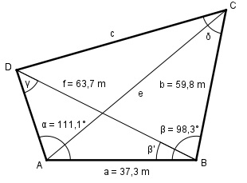

Aufgabe 157 Wie groß ist der Winkel δ des Vierecks?

Im Dreieck ABC: Fall SWS: Cosinussatz: e2 = a2 + b2 - 2 * a * b * cos β e2 = 37,32 + 59,82 - 2 * 37,3 * 59,8 * cos 98,3° e2 = 37,32 + 59,82 - 2 * 37,3*59,8*(-0,1444) = = 5 611,5 |√ e = 74,9 m Im Dreieck ACD: Fall SSW: f a ------ = ------- |*sin γ sin α sin γ f * sin γ ---------- = a |*sin α sin α f * sin γ = a * sin α | :f a * sin α sin γ = ----------- = f 37,3 m * sin 111,1° 37,3 m * 0,933 = --------------------- = ----------------- = 63,7 m 63,7 = 0,5463 --> γ = 33,1° β’ = 180° - α – γ = 180° - 111,1° - 33,1° = 35,8° Im Dreieck DBC: Fall SWS: Cosinussatz: c2 = b2 + f2 - 2 * b * f * cos (β – β’) c2 = 59,82 + 63,72 - - 2 * 59,8 * 63,7 * cos (98,3° - 35,8°) c2 = 59,82 + 63,72 - 2*59,8*63,7*cos 62,5° c2 = 59,82 + 63,72 - 2*59,8*63,7*0,4617 = = 4 116,3 |√ c = 64,2 m Fall SSW: c f ------------- = ------- |*sin δ sin (β – β’) sin δ c * sin δ ------------- = f |*sin 62,5° sin 62,5° c * sin δ = f * sin 62,5° |:c f * sin 62,5° sin δ = --------------- = c 63,7 m * 0,887 = ------------------ = 0,8801 --> δ = 61,7° 64,2 m